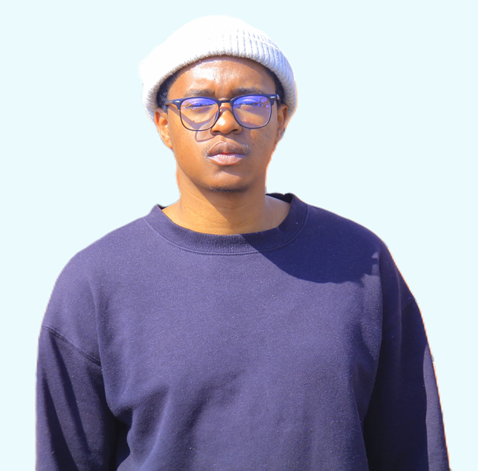

Hello, I'm
Dimpho Molepo
Junior Frontend Developer


Hello, I'm
Junior Frontend Developer
Get To Know More


CodeSpace
Software Engineering (Jan-Dec 2024)

Tshwane University Of Technology
Dip Industrial Physics (Feb 2017-Dec 2019)
AdvDip Industrial Physics (Feb 2020-Jan 2021)
I am an aspiring Front-End Developer. Currently, I am studying a Front-End Development course at CodeSpace to enhance my skills and knowledge in this exciting field. I am passionate about creating visually appealing and user-friendly websites that leave a lasting impression. With a strong foundation in HTML, CSS, and JavaScript, I am eager to dive into the world of web development and bring my ideas to life. As an entry-level developer, I am enthusiastic about gaining hands-on experience and collaborating with fellow developers to create innovative solutions. I am a quick learner, detail-oriented, and always up for a challenge. I believe that continuous learning and staying updated with the latest trends and technologies are crucial in this ever-evolving industry. Through my portfolio, I aim to showcase my growth, creativity, and dedication to creating exceptional web experiences. I am excited to embark on this journey and make a meaningful impact in the world of Front-End Development.